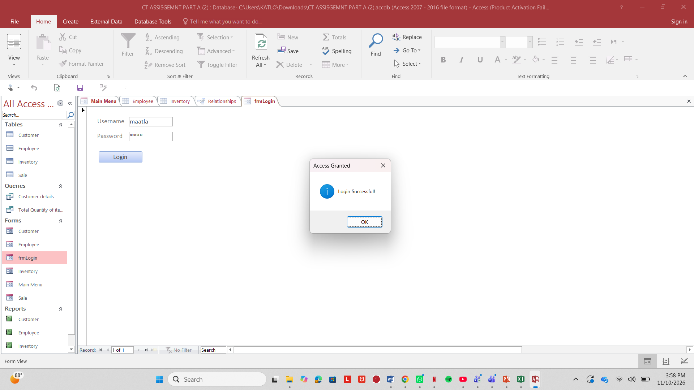
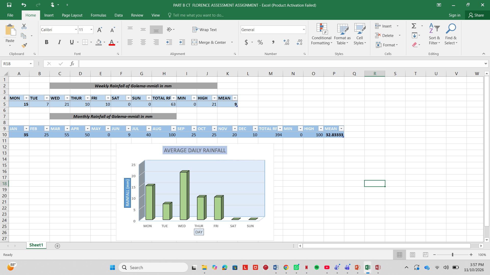
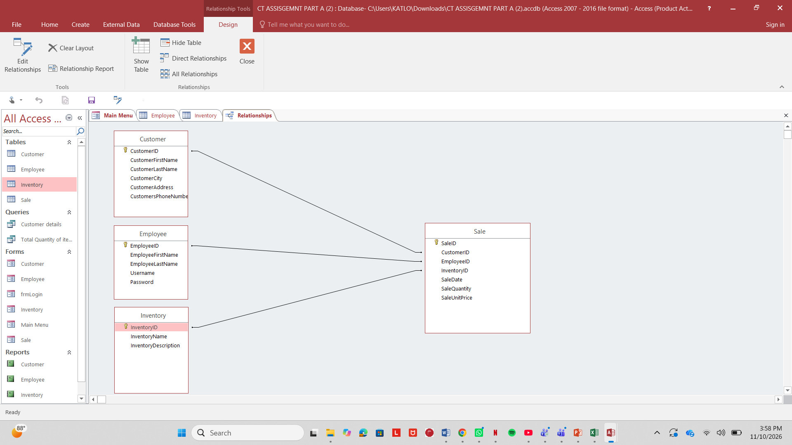

Home / About Me
Hello, I am Katlo Moseki, a first-year undergraduate pursuing a Bachelor of Business Intelligence and Data Analytics at Botswana Accountancy College (BAC) in Francistown. Growing up in Orapa and completing my secondary education in Francistown, I became interested in how data and numbers explain everyday buying and selling habits.
Outside of lectures, I enjoy acting as a strategic commercial connector—linking suppliers with customers. By learning relational databases, SQL querying, and Python workflows, I am building the skills needed to turn raw figures into practical business insights and reduce market friction.
Curriculum Vitae
Personal Details
- Full Name: Katlo Moseki
- Nationality: Motswana
- Date of Birth: 25/10/2006
- Email: noobmike872@gmail.com
- Cell: 71707202
- WhatsApp: +27 (0) 660117665
- Location: Francistown, Botswana
Educational Background
-
Tertiary Education: Botswana Accountancy College (BAC), Francistown (2026 – Present)
Bachelor of Business Intelligence and Data Analytics (First-Year) — Core focus on business intelligence, database management systems, SQL querying, and Python data analytics pipelines. - Senior Secondary: Francistown Senior Secondary School (FSSS) — BGCSE Education.
- Junior Secondary: Setlalekgosi Junior Secondary School, Francistown.
- Primary & Pre-School: Bathoen Primary School & Tawana Pre-School (located in Orapa).
Experience & Voluntary Work
-
Independent Small-Scale Sales & Brokering (2024 – Present)
Connected local buyers with product suppliers around Francistown, handling price negotiations, client follow-ups, and basic stock tracking. -
Peer Study & Tech Support Volunteer – BAC (2026)
Helped fellow first-year classmates set up GitHub repositories, troubleshoot SQL queries, and format group assignments.
Skills & Certifications
Reflective Blog Post
My First-Semester Learning Journey at BAC
November 2026 | Learning & Growth Reflection
Moving from Francistown Senior Secondary School to tertiary education at Botswana Accountancy College has been a major adjustment. In high school, teachers constantly reminded us about deadlines and checked our work every week. At BAC, nobody chases you to attend lectures or start assignments early. During the first three weeks of the semester, I struggled to balance my independence with the workload of my Business Intelligence and Data Analytics modules.
Time management was my biggest challenge early on. I used to leave coding exercises and database tasks until the night before they were due, which caused unnecessary stress whenever I ran into syntax errors I could not immediately fix. Eventually, I realized I needed a proper study routine. I started writing daily to-do lists and breaking larger assignments into 45-minute study sessions in the library between classes. Practicing SQL queries and Python scripts for a short time every day instead of cramming on weekends made a clear difference in how well I understood the logic.
Developing a growth mindset toward technical subjects was another important step. At first, seeing red error messages in Python or getting stuck on table joins in SQL made me feel like I was falling behind. Over time, I learned that errors are just part of learning how to code. Instead of getting frustrated, I began reading the error lines carefully, testing smaller pieces of code, and asking classmates or lecturers for clarification when I got stuck.
Looking back over this semester, I have become much more disciplined and focused. Building this portfolio website from scratch using HTML, CSS, and GitHub Pages proved to me that I can learn practical technical skills step by step if I stay consistent. Next semester, I plan to stick strictly to my weekly study timetable and start every project the same week it is given.
Group Work Experience
November 2026 | Tuckman's Stages of Group Development
Forming: Our group was formed during the first month of the semester at Botswana Accountancy College (BAC), bringing together six members: myself (Katlo), Bradley, Prisca, Unangoni, Boraete, and Florence. Aside from seeing each other in lectures, most of us did not know one another well beforehand. In our first meeting, everyone was polite and a bit quiet, mainly focusing on exchanging WhatsApp numbers and reading through the assignment brief together.
Storming: Once we started dividing up the tasks, we hit our first disagreements. Everyone had different free periods, so we clashed over when to meet and how to structure our work. Some members wanted to rush through the first draft quickly, while others wanted more time to verify the technical details. There was also brief tension when an internal deadline slipped because two members misunderstood which section they were covering. We resolved this by holding an honest face-to-face discussion after class where everyone shared their concerns openly.
Norming: After that meeting, things improved because we set clear ground rules. We agreed to use our WhatsApp group strictly for project updates, set internal deadlines two days before the official submission date, and assign roles based on each person's strengths—such as database normalization, Python logic, and final editing. Having clear expectations stopped the confusion and built trust among us.
Performing: By the final weeks of the semester, we were working smoothly as a team. Whenever someone got stuck on a section, another member stepped in to review or help fix it without being asked. We combined our individual parts seamlessly and checked everything together before submitting.
Adjourning & Key Lessons: When we completed our final work, there was a strong sense of relief and pride, with no unfinished tension left over. This teamwork experience sharpened my leadership, communication, and project management skills, proving that combining diverse analytical viewpoints yields much more robust data-driven solutions. They also taught me the most valuable things I never thought I needed in my life, and because of them I became dedicated to my schoolwork in order to chase my dreams of becoming a Business Intelligence Agent.
Skills and Projects
Key artifacts showcasing practical competence in database engineering, SQL database querying, and Python script processing.
Technical & Professional Skills

SQL Query Execution & Data Retrieval
Demonstrating relational database management, multi-table joins, and structured query language executions designed to support complex business reporting.

Python Data Analytics Pipeline
Automated script implementation built for data preprocessing, data cleaning, statistical evaluation, and streamlined analytical logic workflows.

Database Schema & Entity-Relationship Design
Mapping out relational dependencies, primary/foreign keys, and normalizing data models to optimize database integrity for modern business intelligence applications.

GITHUB CODING USING HTML AND CSS
This section integrates live version-controlled scripts and modular code blocks directly from the source repository, maintaining clean separation of concerns across HTML, CSS, and backend logic modules.

GITHUB CODING AND EXECUTION SUCCESSFUL
Build & Compilation Status: All automated pipelines, syntax audits, and commit sequences have completed. STATUS: EXECUTION SUCCESSFUL (0 compilation errors, 0 runtime warnings, changes live on main branch).
Application Letter
Katlo Moseki
P.O. Box 1042
Francistown, Botswana
Phone: +267 71707202
Email: noobmike872@gmail.com
12 November 2026
The Human Resources Manager
Recruitment & Industrial Attachment Committee
Francistown, Botswana
Dear Sir/Madam,
RE: APPLICATION FOR INDUSTRIAL ATTACHMENT IN BUSINESS INTELLIGENCE / DATA ANALYTICS
I am writing to formally apply for an industrial attachment placement within your organization. As a first-year undergraduate student pursuing a Bachelor of Business Intelligence and Data Analytics at the Botswana Accountancy College (BAC), I bring a strong foundation in technical data handling alongside practical commercial awareness.
My coursework encompasses relational database design, SQL querying, Python scripting, and Microsoft Excel. Alongside my studies, my experience in small-scale sales and supply brokering has taught me how to track market demand and communicate clearly with clients. I am eager to contribute fresh analytical insights, streamline data workflows, and add value to your team while gaining hands-on industry experience.
My curriculum vitae and digital portfolio (available at https://katlo-bet.github.io/P-O-R-T-F-O-L-I-O/) provide further details on my academic background and coursework projects. I am available for an interview at your convenience.
Thank you for your time and consideration.
Yours sincerely,
Katlo Moseki
Email Template
A short, professional email to send along with my CV and cover letter.
Subject: Industrial Attachment Application – Katlo Moseki (Business Intelligence & Data Analytics)
Dear [Hiring Manager's Name],
Please find attached my Curriculum Vitae and Application Letter for an industrial attachment placement within your organization.
I am a first-year Bachelor of Business Intelligence and Data Analytics student at Botswana Accountancy College (BAC) in Francistown, with practical skills in SQL, Python, Excel, and web development. You can also view my coursework projects and full portfolio online here: https://katlo-bet.github.io/P-O-R-T-F-O-L-I-O/
Thank you for your time and consideration. I look forward to hearing from you.
Best regards,
Katlo Moseki
Phone: 71707202 / WhatsApp: +27 (0) 660117665
Email: noobmike872@gmail.com
Francistown, Botswana